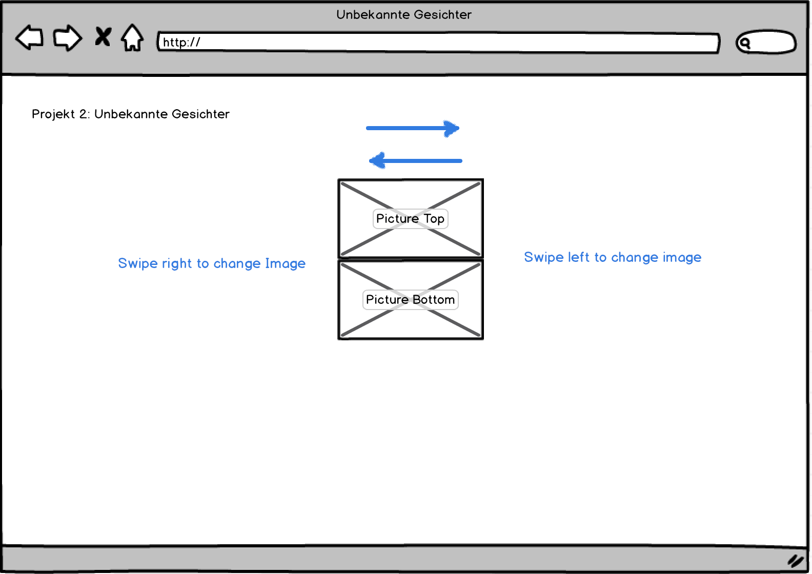
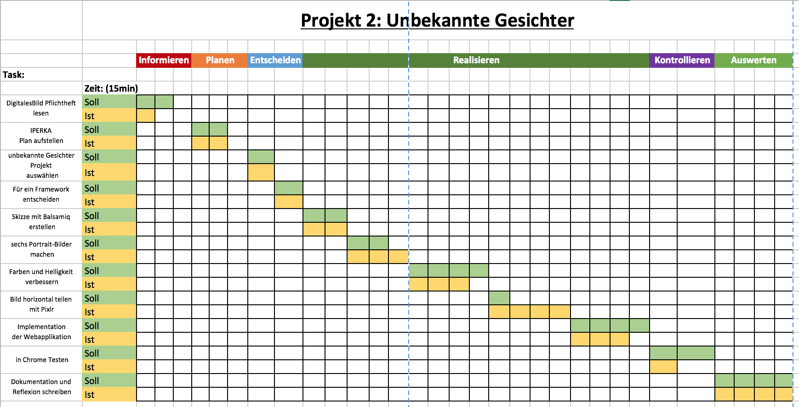

Projekt 2: Unbekannte Gesichter
Begründung der Auswahl:
Diese Projekt fand ich zu Beginn etwas merkwürdig, so länger ich aber darüber nachgedacht habe desto besser gefiel mir die Idee, einfach mal etwas „unnützes“ zu programmieren.
Es ist eins dieser Schulprojekte, das man später einmal so zum Spass seinen Kollegen zeigt und sagt das hab ich früher mal in der Schule gemacht.
Ausserdem ist es sehr gut geeignet um die erlernten Fähigkeiten aus Projekt 1 zu repetieren.
Bezug zur Theorie:
Auch in diesem Projekt habe ich viel mit HTML und CSS gespielt. Hier habe ich mich im vorherein etwas genauer informieren müssen, um einen schönen „slide“ Effekt für die Bilder zu schaffen, dabei ist mir natürlich der Theorieteil über die Interaktion im Hinterkopf geschwebt und mir war klar das dies möglichst smooth sein müsste.
Bei den Bildern kamen die grössten Probleme auf, diese mussten so geschnitten werden, das sich jeweils der Oberteil des Kopfs mit dem Unteren nahtlos verbindet und das ist einfacher gesagt als geschnitten! Ich habe mich hier mit einem Klassenkameraden zusammengesetzt, der etwas gewandter mit den Bildbearbeitungstools ist wie ich, um dies möglichst genau zu machen. Im Hinblick zur Theorie haben wir beim Aufnehmen auf optimale Lichtverhältnisse geachtet und beim schneiden mussten wir dann etwas mit der Drehung der Bilder tricksen.
Reflexion:
Was habe ich gelernt?
Ich habe das opensource Framework Dragend genauer unter die Lupe genommen, dabei ist mir schnell klargeworden, dass die Entwickler viel Zeit in eine möglichst flüssige Transformation gelegt haben. Schlussendlich hat mich ihre API überzeugt, da sie sehr simple und effektiv war. Die Implementation nach der guten Recherche war dann ein Kinderspiel.
Welche Folgerungen für das Fach kann ich ziehen?
Bei diesem Projekt denke ich war es durchaus wichtig erst einmal genügend Informationen zu finden um es simple, schlicht und vor allem flüssig umzusetzen.
Wie bin ich vorgegangen?
Zu erst habe ich die Aufträge im Pflichtenheft nochmals überflogen und anschliessend einen Zeitplan aufgestellt. Dabei habe ich mich dann auch gleich für ein Projekt entschieden. Danach war mir schnell klar das ich hier gut tue wenn ich mich erst einmal für ein Framework entscheide.
Folgend ging es dann an die Realisierung des Projekts, dabei habe ich zuerst eine Skizze der Web-Applikation erstellt:

Darauf ab habe ich dann die benötigten Ressourcen beschafft und diese mit viel Aufwand so geschnitten das sie perfekt für das Projekt passen. Anschliessend ging es an die Implementation der Web-Applikation und zum Schluss habe ich dann die Dokumentation und Reflexion geschrieben.
Welche Methoden habe ich gewählt?
Ich bin nach der 6-Schritte Methode, IPERKA, vorgegangen.
Dabei handelt es sich um sechs Phasen:

Was hat mir gefallen, was nicht?
An diesem kleinen Projekt hat mir besonders gefallen, dass ich es geschafft habe, etwas was am Anfang nach so viel Arbeit ausgeschaut hat, so schlicht und einfach zu halten. Das ist etwas das einen als Programmierer begeistern kann.
Was half mir beim lernen, was nicht?
Beim lernen hat mir vor allem die detaillierte API und natürlich Google geholfen.
Was gelang mir gut?
Die optimale Ressourcen Nutzung und die Simplizität des Codes.
Was kann ich jetzt gut oder besser?
Nichts Bestimmtes, jedoch denke ich habe ich mich auf der ganzen Linie der Bildbearbeitung verbessert.
Wo hatte ich Schwierigkeiten?
Ich hatte im eigentlichen Sinn keine grossen Schwierigkeiten, jedoch hat dieses Projekt sehr viel Zeit in Anspruch genommen.
Woran will ich das nächste Mal denken?
Bei der Bildbearbeitung muss ich alle Bilder von Anfang an in aufeinanderliegende Layer setzen und sie dann entsprechend drehen, so dass ihre Augen auf gleicher Höhe sind und sie dann schneiden und skalieren.